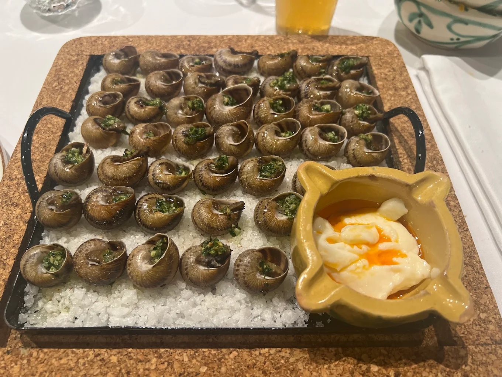
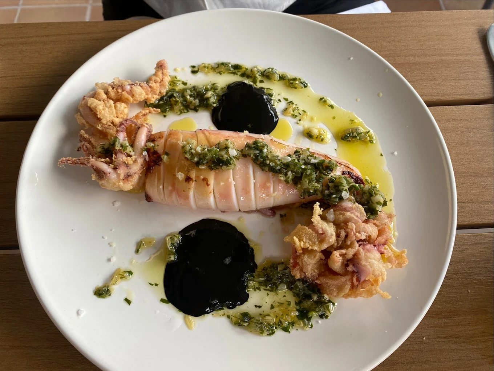
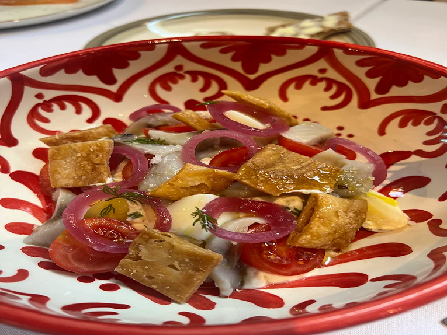
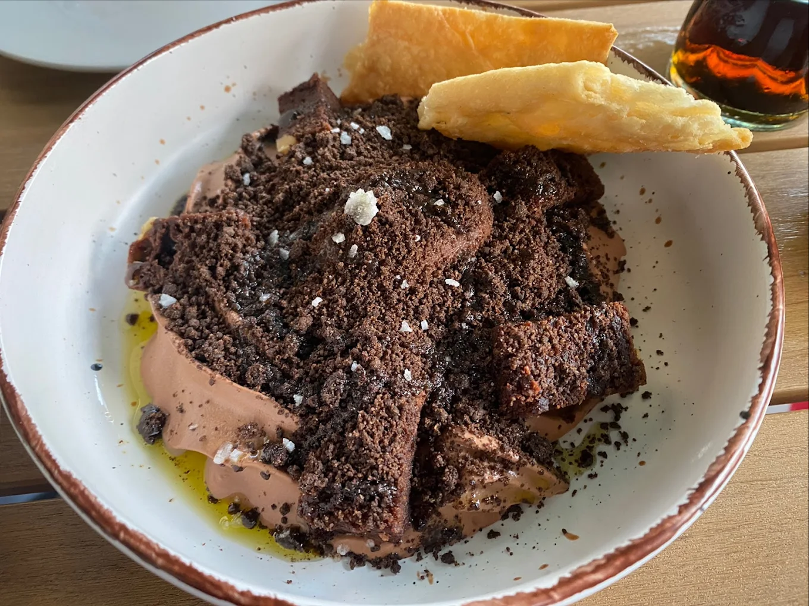
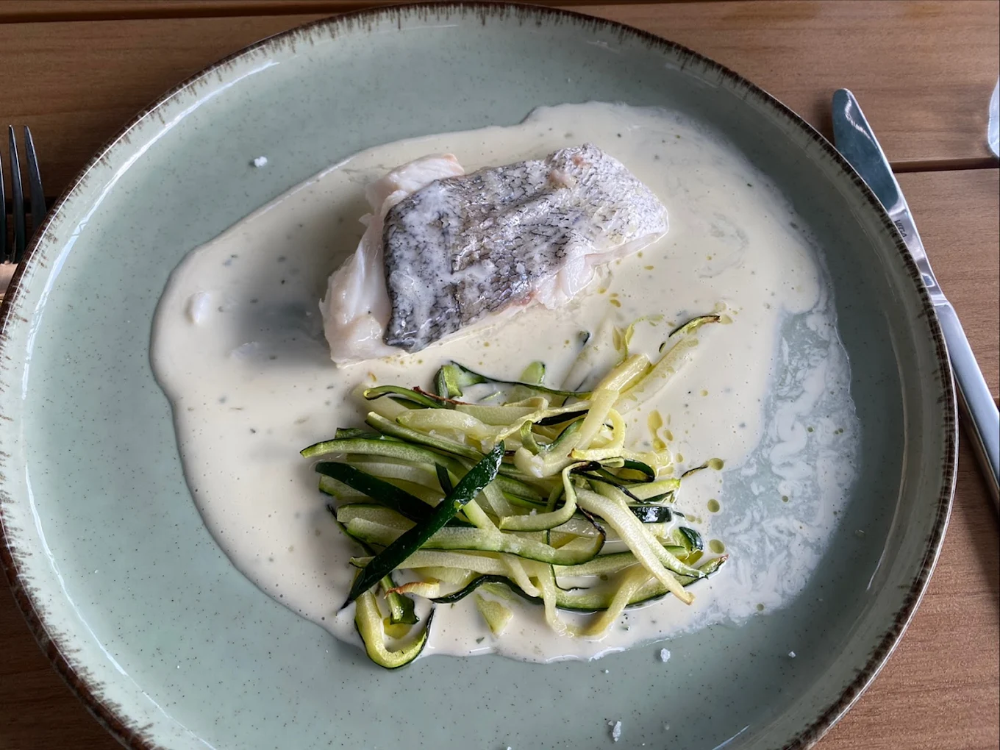
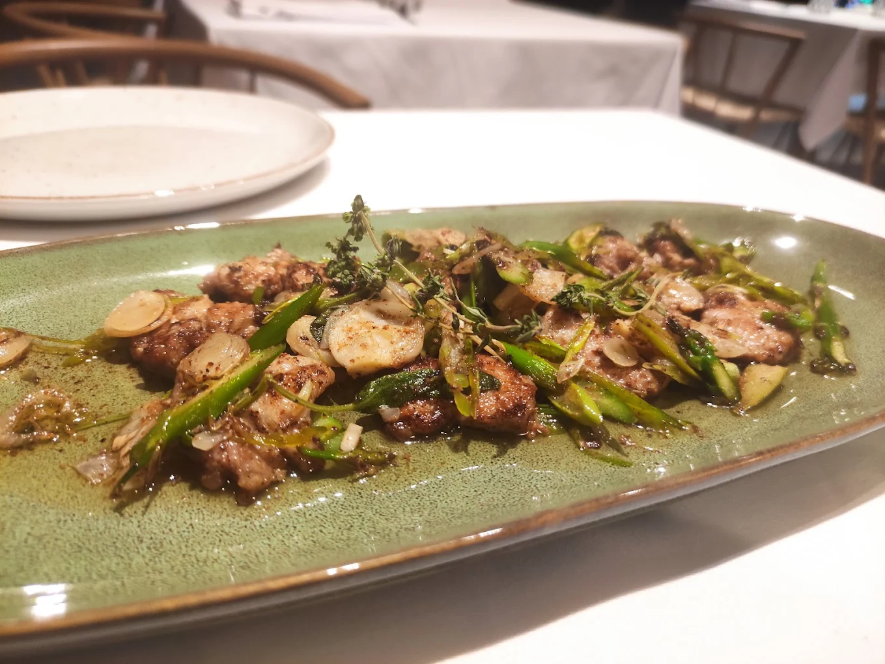
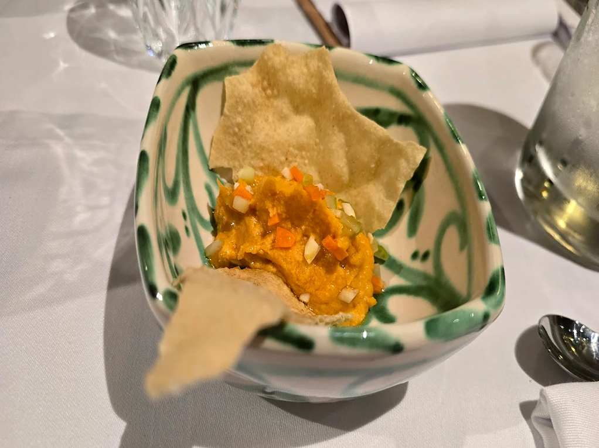
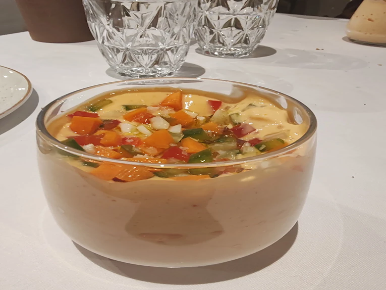
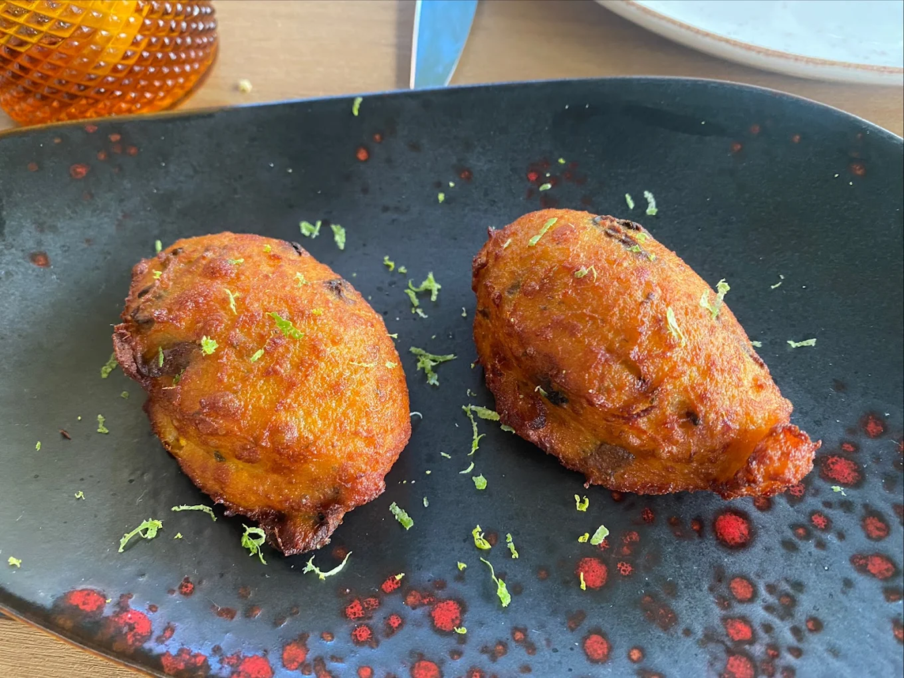

Sobre Nosotros
Borg es cocina con raíces profundas. Anclada a la tierra, para que la imaginación pueda volar y sorprenderte con lo de siempre. Porque esos sabores y olores que tienes en tu memoria siguen ahí, esperando, deseando ser recuperados. De una manera sincera, honesta, responsable, original, distinta. Así es Borg, el lugar al que estás pensando volver cuando aún no te has ido.
Nuestros Horarios
Comidas de viernes a domingo
de 13:00 h. a 15:30 h.
Cenas de lunes a domingo
de 19:30 h. a 23:00 h.